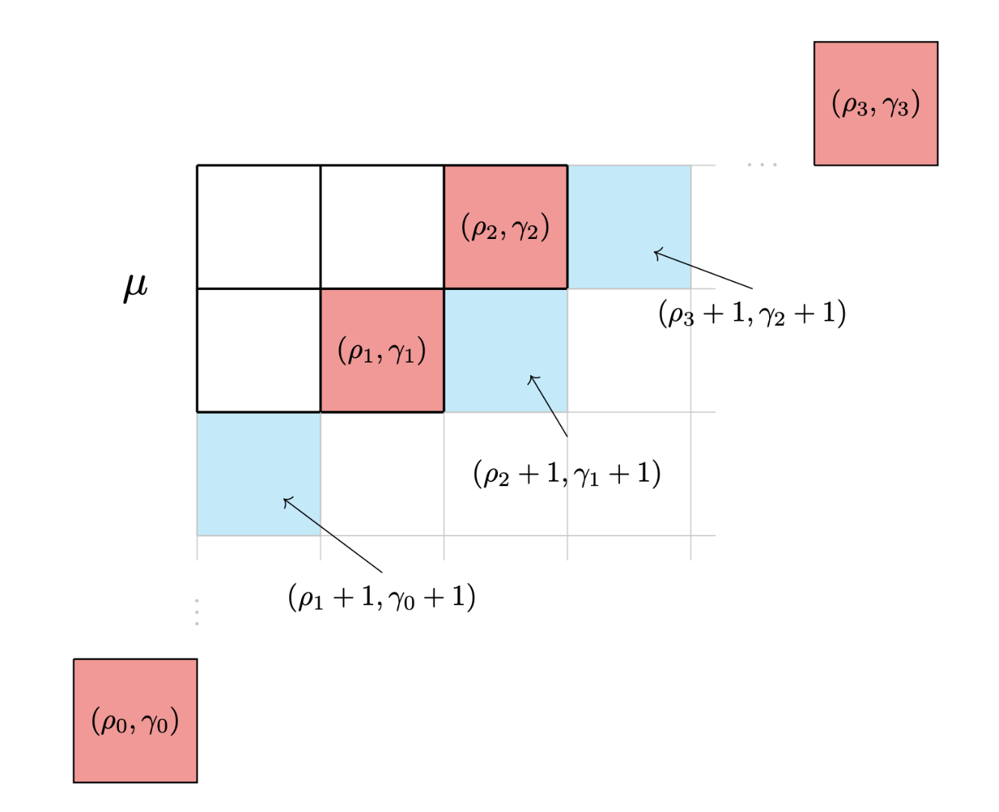

Kyla Pohl
Research

I am a combinatorialist with a wide interest in symmetric functions and hook length generalizations.
My primary focus is Jack symmetric functions.
Many problems I work on come from geometry and have a probabilistic flavor.
I appreciate naive methods and take an experimental approach to most of my work.
This involves collecting data in order to conceptualize ideas and describe potential conjectures, usually in SageMath.
My github is empty right now, but I plan to add some of my more interesting jupyter notebooks to it soon.
For a more detailed description of what I do, my research statement is
here.
Papers
-
K. Pohl, B. Young;
"Jack Combinatorics of the Equivariant Edge Measure;"
submitted for publication arXiv
-
R. Gaybullaev, A. Khudoyberdiyev, K. Pohl;
"Classification of solvable Leibniz algebras with abelian nilradical and k - 1 dimensional extension;"
Communications in Algebra , 48:7, (2020), 3061-3078 arXiv
-
J. Dietz, M. Klein, S. Nycklemoe, K. Pohl;
"Automorphism Orbits of some Metacyclic Groups;"
Pi Mu Epsilon Journal 14, no. 9 (2018): 557-564.
Talks
-
Joint Mathematics Meetings 2025, Jack Combinatorics of the Equivariant Edge Measure, upcoming
-
Lane Community College Introduction to STEM Seminar, Partitions and Hook Walk Algorithms, upcoming
-
University of Oregon Combinatorics Seminar, Jack Combinatorics of the Equivariant Edge Measure, upcoming
-
University of Oregon Student Counting Seminar, Jack Combinatorics of the Equivariant Edge Measure, Oct 2024, slides
-
University of Oregon Combinatorics Seminar, An Introduction to Jack Symmetric Functions, Nov 2023, notes
-
University of Oregon Student Counting Seminar, Introduction to Ramsey Theory, Oct 2022, notes
-
Joint Mathematics Meetings 2019, Classification of solvable Leibniz algebras with abelian nilradical and k - 1 dimensional extension, Jan 2019